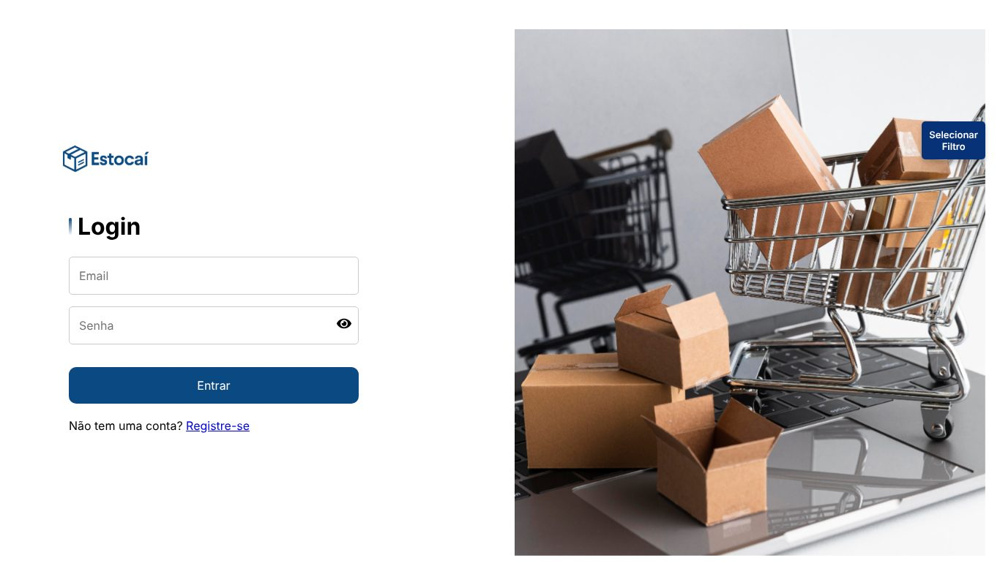
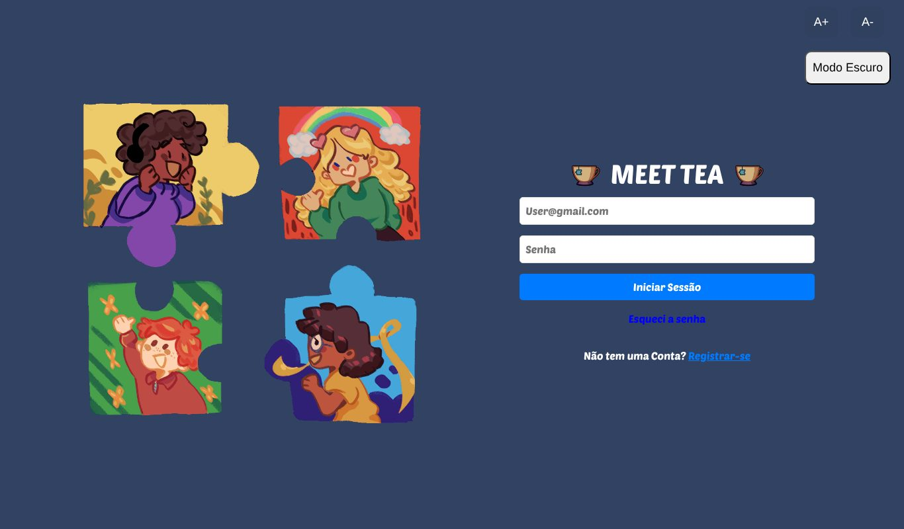
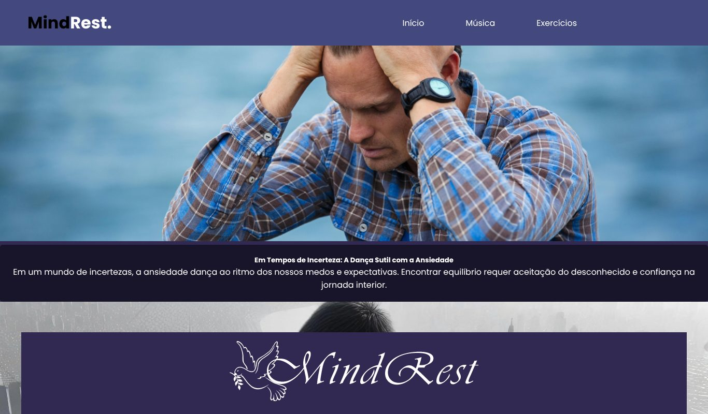

Andrey de Mendonça Santos
Estudante de Desenvolvimento de Software Multiplataforma na FATEC Zona Leste e estagiário de Dados e CRM no Banco Safra. Uno SQL, análise de dados e desenvolvimento web para transformar dados em decisões.
Formação
Curso em andamento e formação técnica.
Desenvolvimento de Software Multiplataforma
- Faculdade
- FATEC Zona Leste
- Início
- 2024 · 1º semestre (fev/2024)
- Conclusão prevista
- 2026 · 2º semestre (dez/2026)
Técnico em Desenvolvimento de Sistemas
- Escola
- ETEC
- Período
- 2022 a 2023
Experiência profissional
Trabalho atual e anteriores.
Estagiário de Dados e CRM
- Consultas em SQL para extração, filtragem e segmentação de grandes volumes de dados de clientes.
- Acompanhamento de métricas de performance em dashboards operacionais e gerenciais.
- Validação, higienização e organização de bases de dados para análises e fluxos operacionais.
- Configuração de fluxos lógicos e réguas automatizadas de campanhas no Adobe Campaign.
- Atuação junto às áreas de negócio para transformar necessidades em requisitos analíticos.
Aprendiz de Análise de Dados e Open Finance
- Suporte na análise de dados regulatórios e operacionais do ecossistema Open Finance.
- Monitoramento de KPIs e elaboração de relatórios para a tomada de decisão.
- Documentação e mapeamento de fluxos de dados e processos para auditoria e controle.
- Acompanhamento de métricas atreladas às normas do Banco Central.
Competências
Cursos de extensão
Cursos complementares realizados.
Desenvolvimento de habilidades em Java (Projeto de Extensão Universitária)
- Instituição
- COMPETEC / EACH USP
- Local
- USP Leste, São Paulo
Introdução à Lógica de Programação
- Instituição
- TIM Tec / CATE (Centro de Apoio ao Trabalho e Empreendedorismo)
- Local
- Portal CATE (online)
Excel 2010
- Instituição
- CATE (Centro de Apoio ao Trabalho e Empreendedorismo)
- Local
- Portal CATE (online)
Processo Seletivo
- Instituição
- CATE (Centro de Apoio ao Trabalho e Empreendedorismo)
- Local
- Portal CATE (online)
Letramento Digital Microsoft
- Instituição
- CATE em parceria com a Microsoft
- Local
- Portal CATE (online)
Idiomas
Línguas e nível de proficiência.
Projetos
Projetos dos primeiros semestres da FATEC. Clique em um card para ver detalhes.

Site do Buffet Simone
Site institucional para um buffet de eventos, com cardápio dinâmico e área administrativa.

Estocaí
Sistema web de controle de estoque com dashboard de vendas e gestão de funcionários.

Meet TEA
Rede social inclusiva que aproxima pessoas autistas, familiares e cuidadores.

MindRest
Plataforma web com conteúdos e exercícios para lidar com a ansiedade no dia a dia.
Primeiro portfólio
Minha primeira landing page pessoal, com apresentação, habilidades e formulário de contato.